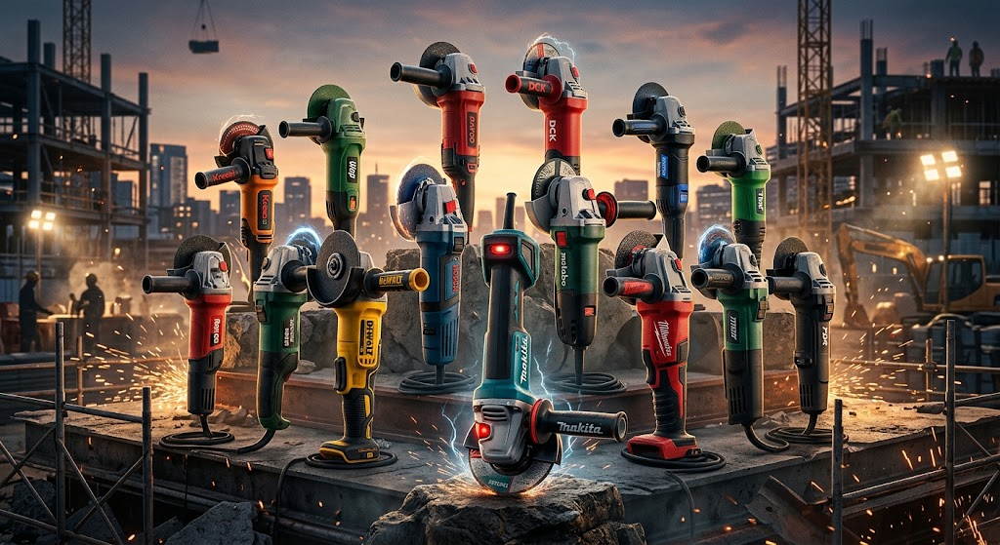

Quando precisa cortar, deixa queelas serram.
Conheça as maiores Esmirilhadeiras, usadas tanto por profissionais quanto por mãos comuns.
Conheça as maiores Esmirilhadeiras, usadas tanto por profissionais quanto por mãos comuns.

💪
Elas são as "canivetes suíços" do trabalho pesado — com o disco certo, cortam, lixam, desbastam e polem metal, concreto, pedra e azulejo sem passar sufoco. Sensação de poder absurda!
🔥
O visual operacional de uma esmerilhadeira em ação, jogando aquela chuva de faíscas ao cortar metal, dá uma sensação única de força e transformação do material.
🦾
A tecnologia embarcada (como embreagens, motores e sistemas) faz com que essas máquinas entreguem uma potência absurda na palma da sua mão com total precisão.